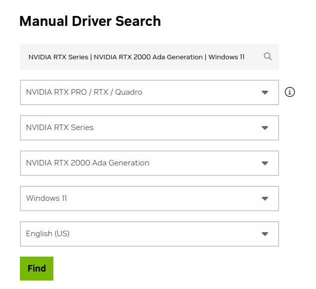
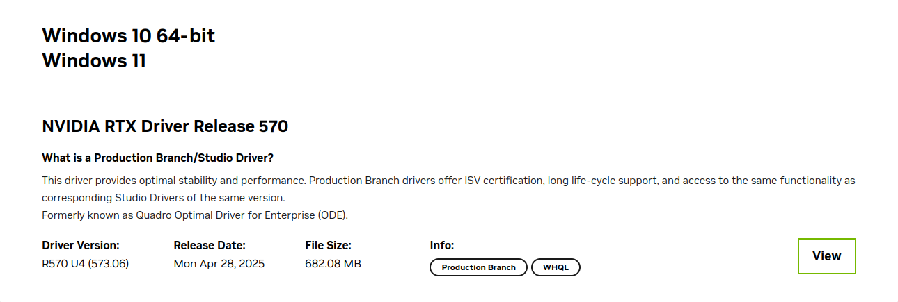
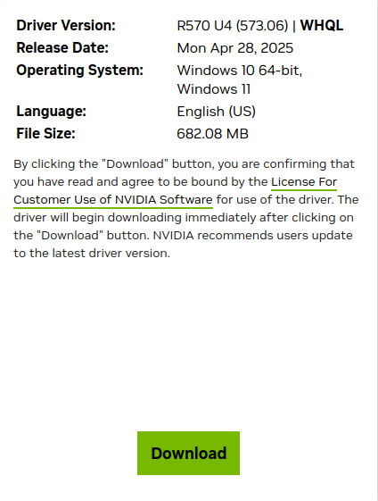
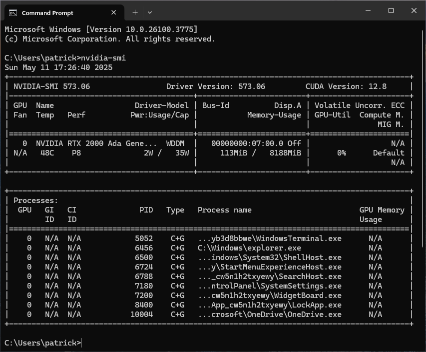
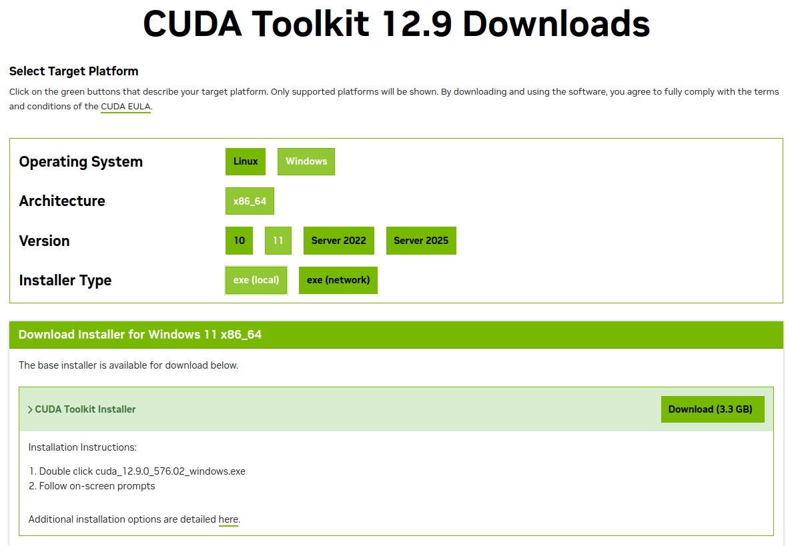
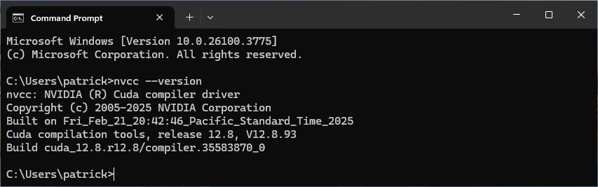
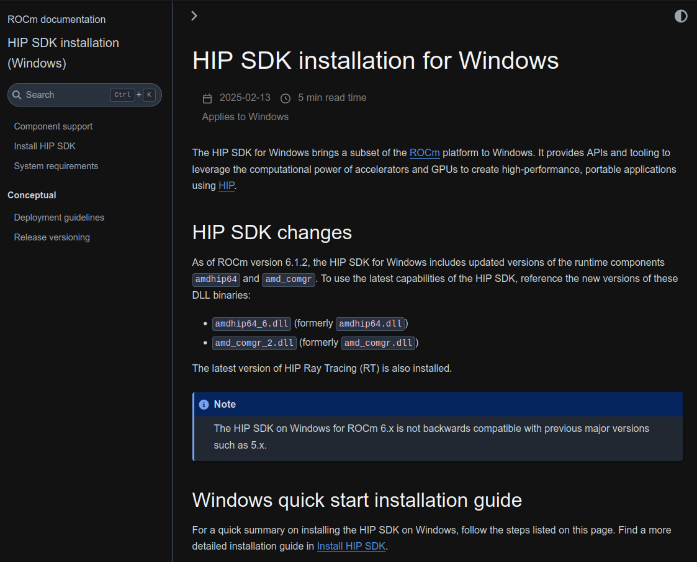
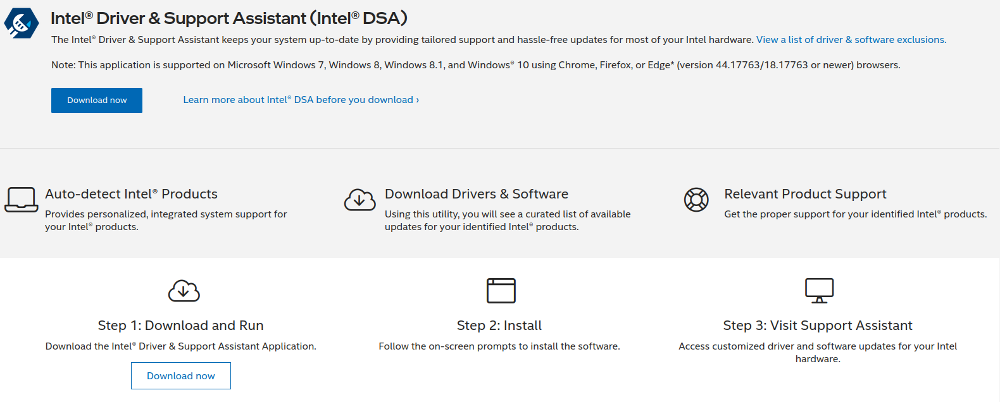

Install Visual Studio (Community, Professional, or Enterprise)
winget install --id Microsoft.VisualStudio.2022.Community -e
#winget install --id Microsoft.VisualStudio.2022.Professional -e
#winget install --id Microsoft.VisualStudio.2022.Enterprise -eAdd workloads Desktop development with C++ and
.NET Desktop development
cd "C:\Program Files (x86)\Microsoft Visual Studio\Installer"
/f "delims=" %i in ('vswhere -latest -property installationPath') do set "VSPATH=%i"
vs_installer.exe modify --installPath %VSPATH% --add Microsoft.VisualStudio.Workload.NativeDesktop --passive --norestart
vs_installer.exe modify --installPath %VSPATH% --add Microsoft.VisualStudio.Workload.ManagedDesktop --passive --norestartInstall Visual Studio Code (Stable or Insiders)
winget install --id Microsoft.VisualStudioCode -e
#winget install --id Microsoft.VisualStudioCode.Insiders -eInstall VSCode Extensions
code --install-extension ms-vscode.cpptools-extension-pack --force
code --install-extension vadimcn.vscode-lldb --force
code --install-extension nvidia.nsight-vscode-edition --force
code --install-extension ms-vscode-remote.remote-wsl -force
code --install-extension ms-vscode-remote.remote-ssh --force
code --install-extension ms-dotnettools.csdevkit --force
code --install-extension dotnettools.vscodeintellicode-csharp --force
code --install-extension yzhang.markdown-all-in-one --forceNote that this assumes you have an Nvidia graphics card
Visit: https://www.nvidia.com/en-us/drivers
Find your Nvidia Graphics card driver
Find button
On the next page, click the View button

Click the Download button

Double-click the downloaded file to start the installation
Verify the installation by opening a CMD terminal and runnning
the command nvidia-smi
Make a note of the CUDA Version in the top right

Note that this assumes you have an Nvidia graphics card
Visit: https://developer.nvidia.com/cuda-toolkit-archive
Choose a CUDA Toolkit version
Choose:
Windowsx86_6410, 11,
Server 2022, or Server 2025exe (local) or exe
(network)Download button
Double-click the downloaded file to start the installation
Verify the installation by opening a CMD terminal and runnning
the command nvcc

Note the CUDA compilation tools, release
nvidia-smi)(optional) If you also want to install cuDNN, you can download it here:
Note that this assumes you have an AMD Radeon graphics card (or AMD Ryzen CPU)
Dowload Windows Driver buttonNote that this assumes you have an AMD Radeon graphics card
Visit: https://rocm.docs.amd.com/en/latest
In the left margin, under Install, click
HIP SDK on Windows
In the left margin, under
HIP SDk Installation (Windows), click
Install HIP SDK
Follow the instructions to install the HIP SDK.

Note that this assumes you have an Intel CPU and/or GPU
Visit: https://www.intel.com/content/www/us/en/support/detect.html
Download the tool and update your Intel drivers

Note that this assumes you have an Intel CPU and/or GPU
Intel oneAPI Base ToolkitWindowsOffline Installer or
Online InstallerSubmit & Begin Download buttonOpen a terminal, then run the commands below
Install Git
winget install --id Git.GitInstall VCPKG
git clone https://github.com/microsoft/vcpkg.git %LOCALAPPDATA%\Programs\vcpkg
cd %LOCALAPPDATA%\Programs\vcpkg
.\bootstrap-vcpkg.bat
setx PATH "%PATH%;%LOCALAPPDATA%\Programs\vcpkg"Install OpenCL SDK and Integrate VCPKG it with Visual Studio
vcpkg install opencl:x64-windows
vcpkg integrate installThe OpenCL headers and libraries are now available here:
%LOCALAPPDATA%\\Programs\vcpkg\installed\x64-windows\include%LOCALAPPDATA%\\Programs\vcpkg\installed\x64-windows\libOpen a terminal, then run the commands below
Install 7zip and wget
winget install --id 7zip.7zip
winget install --id GNU.Wget2
mklink %LOCALAPPDATA%\Microsoft\WinGet\Links\wget.exe %LOCALAPPDATA%\Microsoft\WinGet\Links\wget2.exeInstall WinLibs
wget -O winlibs.7z https://github.com/brechtsanders/winlibs_mingw/releases/download/14.2.0posix-12.0.0-ucrt-r3/winlibs-x86_64-posix-seh-gcc-14.2.0-llvm-19.1.7-mingw-w64ucrt-12.0.0-r3.7z
7z x winlibs.7z -o%LOCALAPPDATA%\Programs\WinLibs -y
del winlibs.7z
setx PATH "%PATH%;%LOCALAPPDATA%\Programs\WinLibs\mingw64\bin"GCC, GDB, Clang, and LLDB are now available here:
%LOCALAPPDATA%\Programs\WinLibs\mingw64\bin